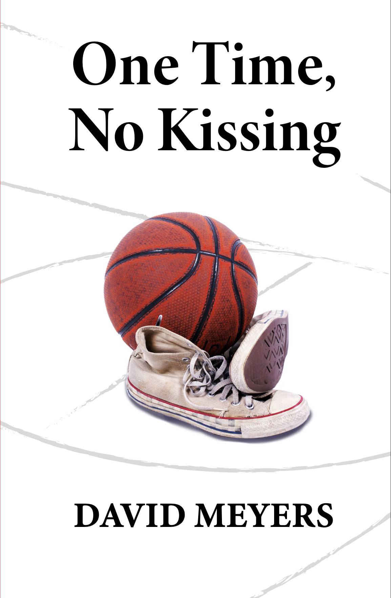

One Time,
No Kissing
One Time, No Kissing is a work of autofiction set during three months of the 1968–69 basketball season at a public high school in Pittsburgh. It is a coming-of-age story told by a member of the team whose life takes some unexpected turns, colliding with many serious issues of the day: the Vietnam War, racial injustice, demographic tensions, women’s rights, and the lingering effect of the Holocaust. The major and minor plot lines arise in surprising and often humorous ways, and are resolved in a positive way, largely due to acts of kindness. In the words of one reader, "at its core One Time, No Kissing is about the virtue of kindness in a challenging world."

David Meyers
What readers are saying
One Time, No Kissing had me turning pages, smiling. A remarkable, funny, poignant, and heartfelt story of a high-school basketball team — diverse students all somehow getting along, getting a good education, forming their own opinions. The sport, the passion for it, and the execution of the game is a character all by itself.
David Meyers’ novel is about ordinary young Americans trying to navigate both the extraordinary uncertainties and anxieties of the late 1960s and the timeless ones of school, friendship, rivalry, and what it means to be a team and a teammate. It is poignant, funny, and rings as true as can be.
This book brings to life the joy and wonder of youth. It's easy to forget how much fun it was to be in high school, but this book won't let you. Every page is filled with keen insight into the intensity of youthful relationships of all sorts: with best friends, crushes, teammates and teachers you love and hate. And at its core, the novel is about the virtue of kindness in a challenging world.